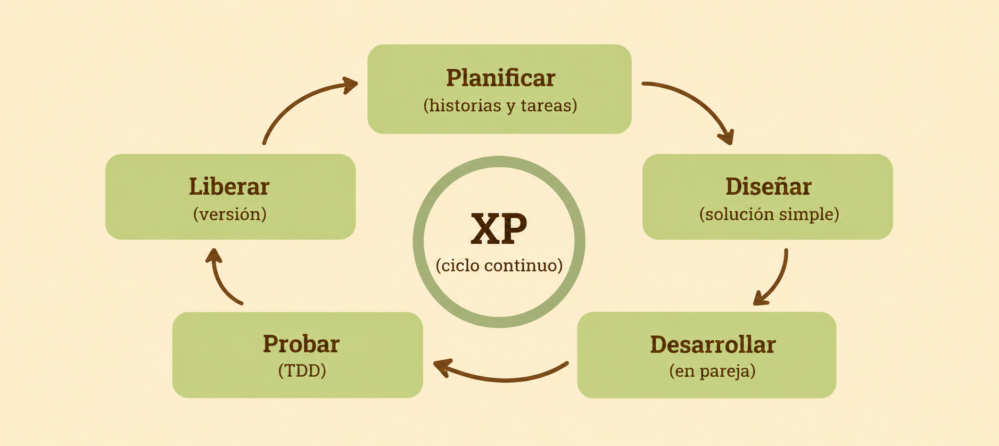
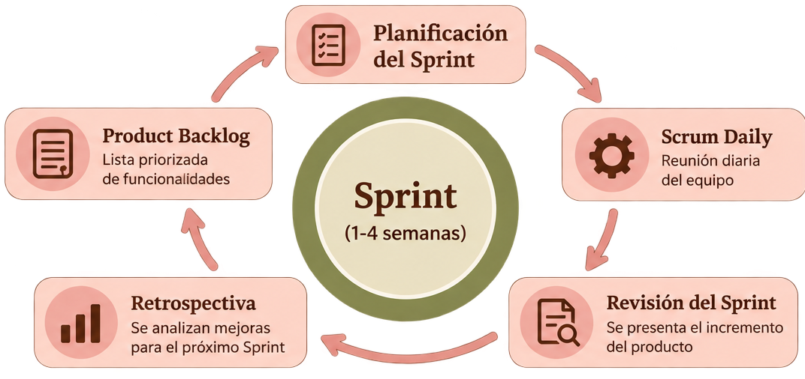
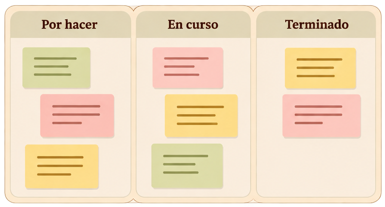
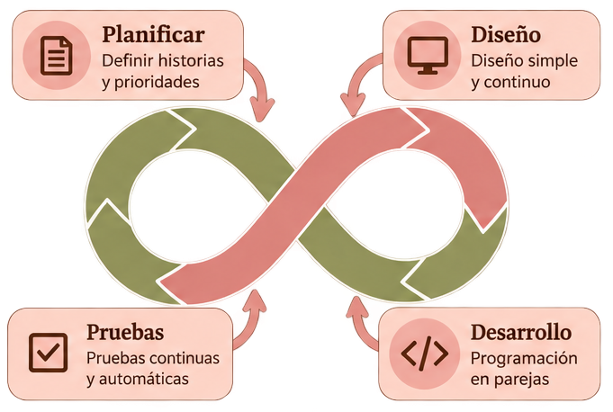

REQUISITOS
→REQUISITOS
Se determinan las necesidades del sistema y lo que se espera que el software realice.
→El SDLC es el conjunto de etapas que se siguen para desarrollar, entregar y mantener un sistema de software.
El ciclo de vida permite organizar el desarrollo y determinar qué se debe hacer, cuándo hacerlo, quién participa, cómo se valida el producto, cómo se controlan los cambios y cómo se mantiene el software.
Se determinan las necesidades del sistema y lo que se espera que el software realice.
→Se define cómo estará estructurado el sistema y cómo se llevará a cabo su construcción.
→Se construye el software mediante la programación y se implementa el diseño definido.
↓Se realizan tareas posteriores para mantener, corregir y mejorar el software.
El software se instala y se pone en funcionamiento para que los usuarios puedan utilizarlo.
←Se verifica que el software funcione como se espera y se detectan posibles fallos.
←El ciclo de vida permite organizar el desarrollo del software y establecer qué hacer, cuándo hacerlo, quién participa, cómo validar el producto y cómo controlar los cambios y mantenerlo.
Los modelos tradicionales utilizan procesos de desarrollo más estructurados y planificados. Entre ellos se encuentran Cascada, Modelo en V, Iterativo e Incremental.
El modelo Waterfall o Cascada es un modelo lineal y secuencial. Una etapa se completa antes de comenzar la siguiente.
Cuando los requisitos están bien definidos, no se esperan grandes cambios y se necesita una planificación estructurada.
El Modelo en V es una evolución del modelo en Cascada que da especial importancia a la verificación y validación. Cada etapa de desarrollo tiene una actividad de prueba asociada.
Cuando los requisitos están bien definidos y es fundamental verificar y validar cada etapa.
El modelo iterativo desarrolla el software mediante ciclos o iteraciones. En cada ciclo se revisa el resultado para identificar oportunidades de mejora.
Cuando los requisitos pueden cambiar, se necesita flexibilidad y se desea mejorar el producto de forma progresiva.
El modelo incremental divide el producto en partes o incrementos. Cada incremento agrega nuevas funcionalidades y se entrega de forma progresiva.
Cuando se necesita entregar valor de manera temprana, los requisitos pueden evolucionar y se busca un desarrollo flexible.
Las metodologías ágiles son un conjunto de prácticas y principios que buscan adaptarse a los cambios, entregar valor de forma temprana y mejorar continuamente el producto.
La agilidad busca adaptarse mejor a entornos donde los requisitos cambian rápidamente y donde es necesario entregar valor de manera temprana y continua.
1. Individuos e interacciones
sobre procesos y herramientas.
2. Software funcionando
sobre documentación exhaustiva.
3. Colaboración con el cliente
sobre negociación contractual.
4. Respuesta al cambio
sobre seguimiento de un plan.
El Manifiesto Ágil propone 12 principios que orientan el trabajo en equipo, la toma de decisiones y la entrega de valor para mejorar continuamente el desarrollo del software.
Explorar los principiosScrum es un marco de trabajo ágil que permite desarrollar productos de forma iterativa e incremental. El equipo trabaja en períodos llamados Sprints, inspecciona los resultados y adapta su forma de trabajo para generar valor continuamente.
En Scrum, las responsabilidades se distribuyen entre los integrantes del Scrum Team, que trabajan en conjunto para alcanzar el objetivo del producto.
Es responsable de maximizar el valor del producto y gestionar eficazmente el Product Backlog.
Ayuda a que Scrum se comprenda y se aplique correctamente, favoreciendo la efectividad del equipo.
Son las personas del equipo que crean un incremento utilizable del producto en cada Sprint.
Los artefactos representan trabajo o valor y ayudan a brindar transparencia sobre el producto y el progreso. Cada uno tiene un compromiso asociado.
Es una lista emergente y ordenada de todo lo que se necesita para mejorar el producto.
Es el conjunto de elementos seleccionados para el Sprint, junto con el plan para entregar el incremento.
Es un paso concreto hacia el objetivo del producto. Debe ser utilizable y cumplir la Definition of Done.
Los eventos permiten inspeccionar el trabajo, adaptar los planes y mantener una comunicación frecuente. El Sprint contiene a los demás eventos.
El Scrum Team define el objetivo del Sprint, qué trabajo puede realizarse y cómo se llevará a cabo.
Es un evento diario de 15 minutos para que los Developers inspeccionen el progreso hacia el Sprint Goal.
El equipo y los interesados inspeccionan los resultados y conversan sobre los próximos pasos.
El equipo analiza cómo trabajó y define mejoras para aumentar la calidad y la efectividad.
Kanban permite visualizar el flujo de trabajo mediante un tablero. Las tareas avanzan entre columnas según su estado, lo que ayuda a detectar bloqueos y mejorar el proceso.
XP es una metodología ágil centrada en la colaboración, la simplicidad y la retroalimentación continua. Busca entregar software de calidad mediante prácticas técnicas y comunicación constante con el cliente.

El ciclo de XP se repite de forma continua, con entregas frecuentes y mejoras constantes.
Escucha activa y colaboración constante.
Soluciones simples y efectivas.
Valoración del equipo y del cliente.
Asumir cambios y mejoras.
Estos gráficos muestran de forma visual el funcionamiento de Scrum, Kanban y XP. Podés abrir cada imagen para verla con más detalle.

El ciclo de Scrum permite iterar, inspeccionar y adaptar el producto de forma continua durante cada Sprint.

El tablero Kanban visualiza el flujo de trabajo y ayuda a identificar las tareas pendientes, en curso y terminadas.

XP se basa en la retroalimentación continua, la programación en parejas y las pruebas frecuentes para mejorar el software.